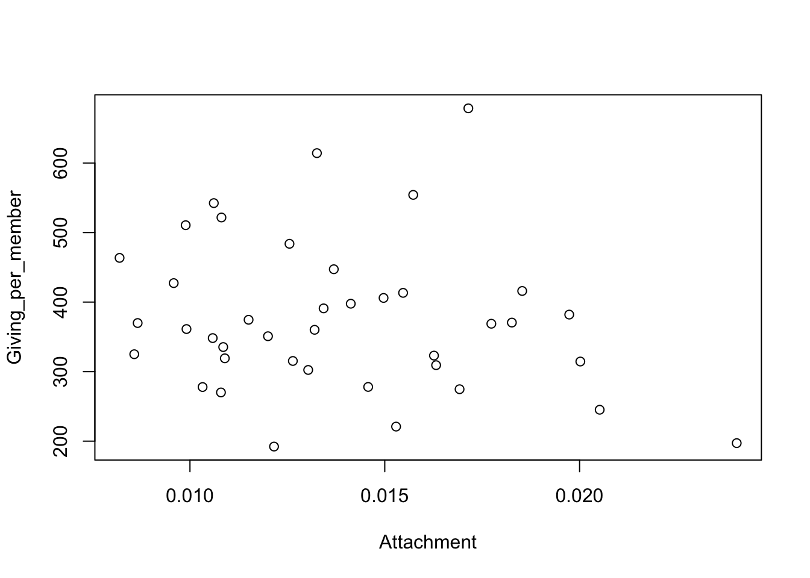

3 Data wrangling
The organisation and restructuring of datasets is a very important step in preparing for later analysis. This is sometimes called data wrangling and some powerful tools for this are outlined here.
3.1 Reorganising data
It is rarely the case that the form in which data are collected is immediately suitable for analysis. There are often things we need to do to put the data into a more suitable structure. Here is an example.
Data on the number of deaths related to covid-19 are available from the National Records of Scotland. Background information is available from the detailed notes by selecting the About tab. The data can be conveniently accessed through the rp.datalink function. The function str gives a useful indication of the type of data present.
## 'data.frame': 10510 obs. of 9 variables:
## $ FeatureCode : chr "S92000003" "S92000003" "S92000003" "S92000003" ...
## $ DateCode : chr "w/c 2020-08-17" "w/c 2020-11-02" "w/c 2020-09-14" "w/c 2020-08-10" ...
## $ Measurement : chr "Count" "Count" "Count" "Count" ...
## $ Units : chr "Deaths" "Deaths" "Deaths" "Deaths" ...
## $ Value : num 0 9 0 1 32359 ...
## $ Sex : chr "Female" "Female" "Female" "Female" ...
## $ Age : chr "45-64 years" "45-64 years" "45-64 years" "45-64 years" ...
## $ CauseOfDeath : chr "COVID-19 related" "COVID-19 related" "COVID-19 related" "COVID-19 related" ...
## $ LocationOfDeath: chr "All" "All" "All" "All" ...Like all real datasets, we need to think carefully about the structure of the data, the way it has been coded and many other detailed aspects. As our understanding grows and our thinking develops so too the R script we use will evolve to represent our exploration and analysis. The code below is the product of a lot of experimentation - and many mistakes! For example, it took a while to understand the meaning of the FeatureCode variable. The setting shown below gives the data for the whole of Scotland, but more serious use of the data should confirm and document that.
As ever, some filtering and recoding of the data may be useful. The code below uses the subset function to pull out the data for Scotland as a whole, for cause of death related to covid 19, for deaths in all settings. Summary numbers for the years 2020 and 2021 are also removed. It is also helpful to indicate that the information in DateCode is a date, as R has special facilities for dates. The sub function removes the “w/c” text at the start of each date code and the uses the as.Date function to tell R that this is a date.
covid_deaths <- subset(covid_deaths, FeatureCode == "S92000003" &
CauseOfDeath == "COVID-19 related" &
LocationOfDeath == "All" &
!(DateCode %in% c("2020", "2021")))
covid_deaths$DateCode <- sub("w/c ", "", covid_deaths$DateCode)
covid_deaths$Date <- as.Date(covid_deaths$DateCode)In order to plot the deaths over time, we need to ensure that we have the dates in the correct order. The order function returns the set of indices which will do this. We can then use the square bracket notation to put the dates and numbers of deaths into the correct order. The type = 'l' argument in the plot function joins these points by lines.
sbst <- subset(covid_deaths, Age == "All" & Sex == 'All')
ind <- order(sbst$Date)
plot(sbst$Date[ind], sbst$Value[ind], type = 'l',
xlab = 'Date', ylab = 'Number of deaths')This shows the overall course of the pandemic in the UK. An exercise at the end of Chapter 4 on Data Visualisation chapter will invite you to explore this at more detailed levels of age and sex.
3.2 Collating data from different sources
In the previous section, standard R functions were used to reorganise data. In principle, most things can be achieved by this route but the code can become complex to handle very detailed manipulations. As often happens, we can take advantage of the careful work of others by using packages which will help. The dplyr package is an excellent example. This provides powerful tools to manipulate data using high-level functions which take care of the details for us. Examples of these tools are described in this section.
This section also makes use of the readxl package to read Excel spreadsheets. Remember that packages need to be installed on your computer before they can be used, as was done for the rpanel package at the start of the book. The code below illustrates this for the two new packages we need, but it will be assumed for other package use later in the book. Installation needs to be done only once, with packages made available for a particular R session through the library function.
Example: Giving in the Church of England
The Church of England is a large organisation whose 12,500 parishes, organised into 42 regions called dioceses, cover the whole of England. This gives a good context within which to explore patterns in charitable giving and Pickering (1985) examined this using data from the 1980’s. Prosperity (expressed in employment rate) and attachment (the proportion of the population associated with the church) were identified as important covariates associated with the variations in giving per church member across the country. Interestingly, giving per church member went down as attachment increased. Is this relationship still evident?The Data Services unit publishes a large amount of information about the composition and activity of the church so this provides an opportunity to examine whether these effects remain. However, the information required is spread across multiple files covering attendance, deprivation and giving. You may like to follow these links to look at the form and content of these spreadsheets.
The first task is to collate the information into a single dataset containing the appropriate data. We will focus on 2019 as this is pre-pandemic. The English Index of Multiple Deprivation (IMD) will be used as a measure of regional prosperity. It is appropriate to exclude Europe, the Channel Islands and the Isle of Man, for which some information is not available. These are also regions with unusual characteristics.
library(readxl)
library(dplyr)
path.attend <- rp.datalink('cofe_attendance_2019')
path.giving <- rp.datalink('cofe_giving_2019')
path.depriv <- rp.datalink('cofe_deprivation_2019')
d.elect <- read_excel(path.attend, sheet = 5, range = 'B4:I47')
d.elect <- select(d.elect, Diocese = 1, Elect = 3, Worship = 6)The instructions above make use of the read_excel function to read an Excel spreadsheet. This includes helpful arguments to specify which sheet and which block of cells we would like to read from. The select function from the dplyr package then allows us to select out three columns of interest while simultaneously renaming them.
The last two operations can usefully be combined in the expression below. This uses the pipe operator. The results of the instruction preceding the %>% symbol are passed as the first argument of the instruction which follows. The select function expects a dataframe as its first argument. This allows multiple instructions to be combined in a natural order, without the need to use repeated <- assignments.
d.elect <- read_excel(path.attend, sheet = 5, range = 'B4:I47') %>%
select(Diocese = 1, Elect = 3, Worship = 6)We can apply this idea when reading the spreadsheets about attendance, giving and deprivation. The deprivation information is actually supplied at a finer level (parish) so the group_by and summarise functions allow us to aggregate to the level (diocese) which matches the information from the other spreadsheets.
d.attend <- read_excel(path.attend, sheet = 6, range = 'B4:D47') %>%
select(Diocese = 1, Attend = 3)
d.giving <- read_excel(path.giving, sheet = 3, range = 'B8:BS49') %>%
select(Diocese = 1, Giving = 19, Givers = 59)
d.depriv <- read_excel(path.depriv, sheet = 2, range = 'A1:AK12408') %>%
select(Diocese = 11, population = 13, IMD = 37) %>%
group_by(Diocese) %>%
summarise(IMD = sum(IMD * population, na.rm = TRUE) /
sum(population, na.rm = TRUE),
population = sum(population, na.rm = TRUE))Before joining these different sets of information togethjer, it would be wise to check that there are no inconsistencies in the way the information has been coded. The anti_join function is very useful for this. Here is identifies some small differences in the names of the dioceses.
## # A tibble: 0 × 3
## # ℹ 3 variables: Diocese <chr>, Elect <dbl>, Worship <dbl>## # A tibble: 3 × 3
## Diocese Giving Givers
## <chr> <dbl> <dbl>
## 1 St.Albans 12579567 15283
## 2 St.Edmundsbury & Ipswich 4614832 8542
## 3 Sodor and Man 447514 623## # A tibble: 2 × 3
## Diocese IMD population
## <chr> <dbl> <dbl>
## 1 St.Albans 14.7 1927579.
## 2 St.Edmundsbury & Ipswich 17.1 679678.That can be fixed by using the mutate and recode functions.
d.attend <- mutate(d.attend, Diocese = recode(Diocese,
'St. Albans' = 'St.Albans',
'St. Edms & Ipswich' = 'St.Edmundsbury & Ipswich'))
d.elect <- mutate(d.elect, Diocese = recode(Diocese,
'St. Albans' = 'St.Albans',
'St. Edms & Ipswich' = 'St.Edmundsbury & Ipswich'))
d.giving <- mutate(d.giving, Diocese = recode(Diocese,
'Sodor and Man' = 'Sodor & Man'))Now we are in a position to join everything together using the full_join function, with a further adjustment to express attachment on a proportional scale and giving on a ‘per member’ scale.
cofe_2019 <- d.attend %>%
full_join(d.elect, by = 'Diocese') %>%
full_join(d.depriv, by = 'Diocese') %>%
full_join(d.giving, by = 'Diocese') %>%
mutate(Attachment = Attend / population,
Giving_per_member = Giving / Elect)Now that the data have been collated into a single dataframe, we are ready to produce some plots which will address the question we began with. There is a lot of variation here. We will revisit this example in Chapter 9 when we discuss the topic of linear models.
plot(Giving_per_member ~ Attachment, data = cofe_2019)
plot(Giving_per_member ~ IMD, data = cofe_2019)
This example illustrates the power of the tools provided by the dplyr package. These manipulations could be performed through standard R functions but the code is likely to be much longer and more complex. A very useful resource is the summary sheet available from the RStudio menu Help > Cheat Sheets > Data Visualization with dplyr and on the web in html and pdf forms. This summarises the wide range of operations which dplyr supports.
3.3 Tidy data
The idea of tidy data is that we have a dataframe in row/column format where each row corresponds to a ‘case’ and each column corresponds to a unique ‘variable’. Many functions expect this format but datasets are not always organised in this way. For example, sometimes we have data where the same variable is measured at different times. The marriage data introduced in Section 2.4.3 is a case in point. (The code to read this dataset is repeated here for convenience.) Each row contains the values for the cohort born in a particular year.
library(readxl)
path <- rp.datalink('married_men')
married_men <- read_excel(path, sheet = "Table 2",
skip = 9, n_max = 96,
col_names = c("Year", as.character(17:50)))
head(married_men)## # A tibble: 6 × 35
## Year `17` `18` `19` `20` `21` `22` `23` `24` `25` `26` `27` `28`
## <dbl> <dbl> <dbl> <dbl> <dbl> <dbl> <dbl> <dbl> <dbl> <dbl> <dbl> <dbl> <dbl>
## 1 1900 0 1 8 24 61 135 214 302 396 483 558 627
## 2 1901 0 2 8 25 57 119 191 276 365 446 527 596
## 3 1902 0 1 6 19 44 101 169 248 330 419 500 573
## 4 1903 0 1 5 16 38 92 158 231 319 404 488 562
## 5 1904 0 1 4 14 36 89 151 232 319 409 494 568
## 6 1905 0 1 3 13 34 82 146 223 311 401 488 561
## # ℹ 22 more variables: `29` <dbl>, `30` <dbl>, `31` <dbl>, `32` <dbl>,
## # `33` <dbl>, `34` <dbl>, `35` <dbl>, `36` <dbl>, `37` <dbl>, `38` <dbl>,
## # `39` <dbl>, `40` <dbl>, `41` <dbl>, `42` <dbl>, `43` <dbl>, `44` <dbl>,
## # `45` <dbl>, `46` <dbl>, `47` <dbl>, `48` <dbl>, `49` <dbl>, `50` <dbl>This was a convenient structure for the three-dimensional surface function persp3d used earlier but many other functions expect the values of interest to be in a single variable, with other variables indexing other relevant information, such as Year and Age in this case.
It is perfectly possible to use basic R instructions to restructure the data, but the very detailed manipulations required can be messy, increasing the possibility of coding errors. The tidyr package is designed to help with this by providing high-level functions to restructure datasets and take care of the detailed manipulations required. For example, we can use the pivot_longer function to change the format of the marriage data in a single instruction. The cols argument identifies where the values of interest are located. There is some flexibility in how those are defined with, for example, !Year providing an alternative expression as ‘all the columns apart from Year’. The values_to argument gives the name of the long column which will be created for the data in the specified cols. The names_to argument provides a name for the new column which will be created from the existing column names to index the new long column of values.
library(tidyr)
married_men_tidy <- pivot_longer(married_men, cols = 2:35,
values_to = "Share", names_to = "Age")
head(married_men_tidy)## # A tibble: 6 × 3
## Year Age Share
## <dbl> <chr> <dbl>
## 1 1900 17 0
## 2 1900 18 1
## 3 1900 19 8
## 4 1900 20 24
## 5 1900 21 61
## 6 1900 22 135You are invited use the data in this form in an exercise in the Data Visualisation chapter.
The concept of ‘tidy data’ gives its name to a whole ecosystem of packages known as the tidyverse. This includes the dplyr and tidyr packages referred to in this chapter. It also includes the ggplot2 package which forms the basis of the data visualisation methods discussed in Chapter 4. It is often convenient to load the entire ecosystem through the instruction library(tyidyverse).
3.4 Further reading
A key reference on data wrangling is the R for Data Science book (Wickham, Çetinkaya-Rundel, and Grolemund 2023). This is also available in web form.
3.5 Exercises
3.5.1 UN demography data
The United Nations World Population Prospects web page provides a great deal of demographic information on countries in the world. Some more detailed information on the variables recorded are also provided. The locations of the two datafiles of interest are available through the rp.datalink function. The first file is located within a zip file. The code below shows how the files of interest can be extracted.
path1 <- rp.datalink("UN_demography")
path1 <- unz(path1, "WPP2022_Demographic_Indicators_Medium.csv")
path2 <- rp.datalink("UN_demography_metadata")With the first dataset,
- use the
read_csvfunction from thereadrpackage to read the data; - filter the data to retain only cases where the
LocTypeNamevariable takes the value “Country/Area”; - select only the variables
LocID,Location,Time,TPopulation1Jan,TFRandLEx, renaming the last four variables asYear,Population,FertilityandLife_Expectancyrespectively; - divide the
Populationvariable by 1000.
The filter, select and mutate functions from the dplyr package will be useful in doing this.
With the second dataset,
- use the
read_excelfunction from thereadxlpackage to read the Excel spreadsheet labelled “Overall”, skipping the first 16 lines as these do not contain data; - select only the variables
LocIDandGeoregName, renaming the second variable asContinentrespectively; - use the
distinctfunction from thedplyrpackage to remove any duplicate rows; - shorten some of the
Continentnames to allow neater visualisations.
This last step requires the case_match function from the dplyr package. As this is its first appearance, the instruction is provided below using dfrm as the name of the dataframe.
mutate(dfrm, Continent = case_match(Continent,
"Latin America and the Caribbean" ~ "LA and Car.",
"Northern America" ~ "N. America",
.default = Continent))Now use the left_join function from the dplyr package to collate the two datasets together, using the LocID variable to match the cases. (Remember to use the anti_join function first, to ensure that there are no mismatches in the coding of LocID in the two datasets.)